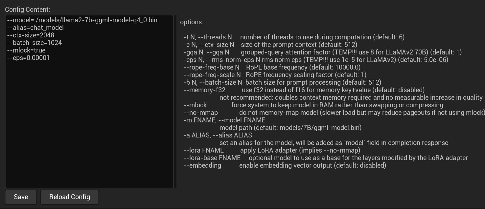

使用 LLM¶
使用 LLM 功能需要以下几个步骤：
- 安装和配置模型
- 添加 LLMActor 组件
- 绑定回调事件
- 开始推理
{: .note}
大语言模型是一项复杂的技术，你应该充分阅读本文档，你可以需要了解大预言模型的几个核心概念：
- Prompt: 提示词
- Context: 上下文
- Token: 生成令牌
还有更多的概念你需要自行学习。
安装和配置模型¶
配置 LLM 包含如下内容：
- 安装模型
- 模型配置
- 系统提示词（System Prompt）配置
- 日志设置
a. 安装模型¶
在开始使用语音套件之前，你必须先下载 LLM 模型文件。目前支持 llama.cpp 量化后的模型。
你可以从我的HuggingFace仓库下载我已经量化好的中文模型：
https://huggingface.co/endink/llama2-7b-ggml-model-q4_0/tree/main
{kind=link}
b. 配置模型¶
下载模型文件（这里以模型文件名为 llama2-7b-ggml-model-q4_0.bin 为例，实际以你下载模型文件名为准）后，将模型放在插件的正确位置，MediaPipe4ULLM 提供了一个配置界面方便的完成这些操作：
依次在 Unreal Engine Editor 打开插件配置:
打开插件配置可以使用以下步骤： 1. 可以点击
编辑（Edit）>>项目设置（Project Settings）。 2. 在项目（Project Settings）设置页面左侧找到插件(Plugins)>>MediaPipe4U LLM并点击。 3. 将 llama2-7b-ggml-model-q4_0.bin 文件复制到 MediaPipe4ULLM 数据目录的models子目录中。
{kind=link}
在 MediaPipe4ULLM 插件设置界面中提供了 Open LLM Data Folder 按钮，你将打开一个 MediaPipe4ULLM 插件的数据目录。
{: .important}
如果点击
Open LLM Data Folder后没有自动打开目录，你可以手动找到它：
目录路径是[Plugins]\MediaPipe4ULLM\Source\ThirdParty\LLMAPI\Data
[Plugins]: 你的 Unreal 项目插件目录。
{kind=link}
将 llama2-7b-ggml-model-q4_0.bin 文件拷贝到 models 目录后，你还需要完成模型配置，模型配置文件是 MediaPipe4ULLM 数据目录下的 llm.conf 文件。
用任意的文本编辑器（例如 Windows 记事本）打开它，进行编辑:
--model=./models/llama2-7b-ggml-model-q4_0.bin
--alias=chat_model
--ctx-size=2048
--batch-size=1024
--mlock=true
--eps=0.00001
你也可以在插件配置界面中编辑它，但是要记得编辑后点击 Save 按钮以保存编辑后的配置。

{kind=link}
{: .important}
配置参数的格式为：
---``[参数名]=[参数值]每行一个参数, 前缀
--不可省略
界面中还提供了参数说明，下面是常用的参数简单说明：
model
模型文件路径， 路径以配置文件所在路径所在目录的相对路径，也可以是绝对路径，相对路径以 ./ 开头。
ctx
模型上下文长度，必须根据模型设置，LLaMA 模型最大长度为 2048 个字符, LLaMA 2 代模型最大长度为 4096，越长的上下文，对于多轮聊天的理解能力越强，但是推理速度会变慢，我认为 2048 已经可以满足普通场景。
mlock
是否锁定内存防止和虚拟内存发生交换，这样可以提高性能（这个参数目前可能不起作用）。
其他参数并不常用，请自行查看插件设置界面中的说明。
c. 配置系统提示词¶
通过插件设置界面来配置模型的系统提示词：
{kind=link}
系统提示词（System Promt）在多轮会话推理时会固定到上下文中，作为默认 Prompt，因此我们可以用它让模型扮演一个角色，或者用来设置一个规则，下面是一个提示词例子：
虽然你可以用提示词赋予模型一些人设，但是受限于模型尺寸和模型理解能力， 模型可能并不能严格的按照你的设定拟人化，它只是尽可能的理解的 Prompt，提示词要尽可能简答，避免包含逻辑。
提示词会占据上下文空间（上下文空间指
ctx配置的最大字符长度），因此不宜设置得过于冗长
d. 设置日志输出¶
Log Verbose
表示输出详细的日志。开启后，日志会非常冗长，正常情况下你不应该启用详细日志，详细日志通常用来进行开发调试或者你想了解模型的推理过程。
至此模型的安装和配置已经完成，请继续阅读后去章节学习如何使用 MediaPipe4ULLM 功能。
用 LLM 生成内容¶
LLM 是复杂的生成式模型可以用来生成复杂结果（例如，写诗、写代码、逻辑计算，讲故事，写文章等）。
模型尺寸越大，生成结果越准确，但是推理的速度也越慢。
{: .highlight}
目前 MediaPipe4U LLM 仅支持 LLaMA 系列模型（LLaMA/LLaMA2），当前实现由于是 CPU 推理，推荐你使用 7B 规格的模型。
可以通过以下步骤在 在 Unreal Engine 中使用 LLM：
- 添加 LLMActor 到场景中
- 在细节面板中设置 LLMActor
- 在蓝图中添加事件（委托）回调，在回调中处理生成结果
- 调用 Chat 函数开始推理
{kind=link}
{: .highlight}
MediaPipe4ULLM 的核心使用方式:
使用
Chat函数发送聊天内容给 LLM。
在OnLLMTokenGenerated事件中接收 LLM 生成结果。
LLMActor 属性¶
LLM Actor 只需要较少的属性即可工作良好。
LoadModelOnStart
控制是否在游戏启动时自动加载模型。
默认值:true
{: .important}
LLM 模型加载过程缓慢，为了避免阻塞游戏线程, 加载过程是异步执行的。
你可以通过
GetModelState函数获取模型状态判断模型是否加载成功。
你还可以通过OnModelsLoadCompleted事件来获得模型加载完成的通知。
SentenceSeparator
对返回结果分句处理时用于分句的标点符号，分句可以以句子形式处理生成结果（例如：用于非流式 TTS 接入）。
SpeechEnabled
是否启用语音朗读模型生成内容。
这个功能依赖 LLM 扩展插件 MediaPipe4ULLMSpeech，关于如何与语音（TTS）集成，有专门文档说明。
默认值: false
SpeechSolution
要使用的语音方案（适用于开发自定义 TTS 实现），关于自定义语音方案， 有专门文档说明。
SpeechDelayCharNum
当使用语音方案时，语言开始朗读延迟的字符数。
{: .highlight}
可能语音朗读速度和 LLM 生成内容的速度不一致（CPU 推理时，模型生成较慢）。
如果直接朗读，会造成语音中间有大量停顿。
使用
SpeechDelayCharNum属性设置延迟朗读的字符数，只有积累的文本字符数大于SpeechDelayCharNum设置的字符数量时才开始朗读，这样可以对齐语音朗读和 LLM 生成的速度。开始朗读字符数可能不是
SpeechDelayCharNum设置的值（通常大于SpeechDelayCharNum）, 因为延迟的文本是以句子为单位积累，并不是以字符形式积累。
CompletionArguments
和模型相关的参数，会应用到聊天会话。
不同的模型有不同的参数类型，关于模型参数更多信息，请阅读会话参数文档。
LLMActor 事件¶
OnModelsLoadCompleted
模型加载完成后触发，模型加载是否成功，通过事件参数 ModelState 获取。
OnLLMTokenGenerated
当 LLM 生成字符时触发。这个事件通常用将文本上屏，以得到打字效果。
{: .important}
这里
OnLLMTokenGenerated事件名中的 "Token" 并不是 LLM 中 "token" 的概念。
OnLLMTokenGenerated是以字符（一个英文字符/中文字符/标点符号）为单位触发。MediaPipe4ULLM 为了方便使用，在底层进行了封装，只有多个 token 被合得到一个字符时，才触发
OnLLMTokenGenerated事件。
OnSentenceGenerated
当 LLM 生成句子时触发。
句子通过 SentenceSeparator 配置的分句符号来进行拆分
OnCompletionFinished
当 LLM 完整的生成了结果时触发。
触发OnCompletionFinished事件时，表示 LLM 的一轮对话完成。
LLMActor 蓝图函数¶
LoadModelAsync
开始异步加载模型，当 LoadModelOnStart 被设置为 false 时，你可以通过该函数手动加载模型。
ResetChat
重置一个聊天会话，用来清空聊天上下文，开始一个新的聊天会话。
其中 Options 参数用来设置模型会话参数，关于会话参数，本文档后面内容详细介绍。
Chat
与 LLM 进行对话，即向 LLM 模型发送聊天指令。
如果当前不存在聊天会话，将使用模型参数创建一个会话 。
如果已经存在聊天会话，将持续继续使用当前的上下文（Context）发送聊天指令。
HasChatSession
返回一个布尔值，指示当前是否存在聊天会话（上下文）。
如果为 true, 表示当前有聊天会话（聊天已经开始），否则为 false。
CancelCompletion
停止 LLM 生成内容，可以理解为取消一轮聊天。
{: .important}
执行
CancelCompletion后，这一轮聊天的用户输入和 LLM 输出都不会保存到上下文中，因为取消会中断 LLM 生成内容，不完整的内容不适合放入上下文。
IsCompleting
返回一个布尔值，指示 LLM 是否正在生成内容。
如果为 true, 表示正在生成内容，反之，LLM 正在等待用户输入。
ApplyCompletionArguments
应用聊天会话参数。
当一个新的聊天会话开始时，CompletionArguments中设置的参数会被自动应用。
某些情况下你可以希望对话过程中改变参数，设置新的参数到CompletionArguments, 然后调用ApplyCompletionArguments函数。
{: .important}
模型生成过程中不能调用
ApplyCompletionArguments函数，你应该在Chat函数之前调用ApplyCompletionArguments。调用
ApplyCompletionArguments函数后，后续聊天对话将使用新的参数，可以随时使用聊天会话参数调整一些行为，例如：
- 模型生成内容长度 - 重复惩罚 - 调整单词出现频率关于聊天会话参数更多信息，请阅读会话参数文档。
语音集成¶
MediaPipe4ULLM 实现了和 MediaPipe4USpeech 集成的功能，可以很方便的让你使用本地 TTS 朗读 LLM 生成的内容。
开启语音集成：¶
- 向场景中添加
MediaPipeSpeechActor。 - 配置好 MediaPipe4USpeech。
- 设置
LLMActor的SpeechEnabled属性为 true（默认是 false）。
{: .highlight}
关于如何使用
MediaPipeSpeechActor和如何正确的配置离线 TTS （MediaPipe4USpeech）, 请阅下面的文档：